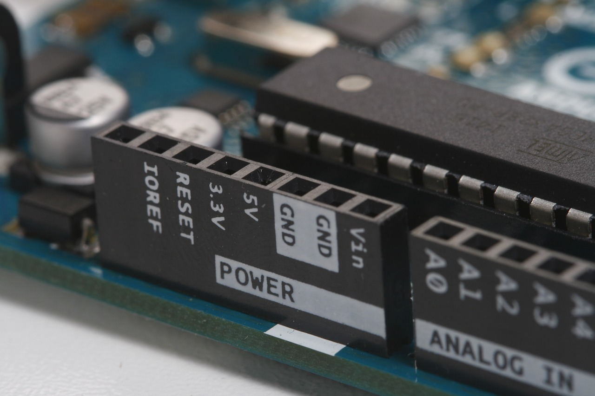

Searching for the best Arduino
How many arduino boards you can find?
There are several sizes and types of arduino boards. Each has different advantages.
There are bigger ones: Arduino Uno, Arduino Due, Arduino Mega, Arduino Leonardo; and smaller: Arduino Nano, Arduino Micro arduino boards.
In this post, I'll go over some of the more popular ones so you can find the one that's right for you.
Arduino Uno
This is the most popular arduino board, and it's the best for beginners. (I have one too!)
Why?
- Because it has 14 digital input/output and 6 analog inputs pins, that's totally enough
- Because its output pins operate at 5 volts
- Because you can get many different shields for it
- Because you can simply connect it to your computer with a USB cable to get started
- Because if something goes wrong you can replace the chip(ATmega328) for a few dollars
Arduino Nano
The Arduino Nano is Arduino's classic breadboard friendly
designed board with the smallest dimensions.
(docs.arduino.cc)
It's really small, so if you don't have enough space, this is the best arduino for you.
- The classical Nano has 14 digital input/output and 8 analog input pins
- The operating voltage of it is 5V
- It has got the same microcontroller(ATmega328) as Arduino Uno
- It has got a Mini-B USB port to connect to your computer
- Unfortunately it hasn't got a replaceable chip, and you can only get a few shields for it (but I think shields aren't that important)
Arduino Mega
It's about the same as the arduino uno, only bigger.
- It's got an ATmega2560 microcontroller, but it isn't replaceable
- It has a lot of digital input/output(54) and a lot of analog input pins(16)
- The operating voltage of it is 5V
- You can connect it to your computer with an USB cable
If you make a projects with a lot of sensors and components, it's the best arduino for you!
Arduino Leonardo
The Leonardo differs from all preceding boards in that the
ATmega32u4 has built-in USB communication, eliminating the need for
a secondary processor. This allows the Leonardo to appear to a
connected computer as a mouse and keyboard, in addition to a virtual
(CDC) serial / COM port.
(www.arduino.cc)
- It's got an ATmega32u4 microcontroller with USB communication
- It has 20 digital input/output and 12 analog inputs pins
- The operating voltage of it is 5V
- It has got a Micro-B USB port
- You can't get shields for it